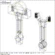
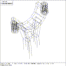

At any time in an editing session, the user may add one or more subtrees to the active model space. If the viewing cube is suitably positioned, the newly added subtrees are drawn on the display. (The ``reset'' function can always be activated to get the entire active model space into view). The normal mode of operation is for users to work with wireframe displays of the unevaluated primitive solids. These wireframes can be created from the database very rapidly.
 Figure (crod): An Engine Connecting Rod
On demand, the user can request the calculation of approximate boundary wireframes that account for all of the boolean operations specified along the arcs of the directed acyclic graph in the database. This is a somewhat time consuming process, so it is not used by default, but it is quite reasonable to use whenever the design has reached a plateau. Note that these boundary wireframes are not stored in the database, and are generally used as a visualization aid for the designer. Figure (crod) shows an engine connecting rod. On the left side is the wireframe of the unevaluated primitives that the part is modeled with, and on the right side is the approximate boundary wireframe that results from evaluating the boolean expressions.
Also, at any time the user can cause any part of the active model space to be dropped from view. This is most useful when joining two complicated subsystems together; the first would be called up into the active model space, manipulated until ready, and then the second subsystem would also be called up as well. When any necessary adjustments had been made, perhaps to eliminate overlaps or to change positioning tolerances, one of the subassemblies could be dropped from view, and editing could proceed.
The position, size, and orientation of the viewing cube can be arbitrarily changed during an editing session. The simplest way to change the view is by selecting one of nine built in preset views, which can be accomplished by a simple keyboard command, or by way of a button press or first level menu selection. The view can be rotated and translated to any arbitrary position. The user is given the ability to execute a save view button/menu function that attaches the current view to a restore view button/menu function.
The rate of rotation around each of the X, Y, and Z axes can be selected by knob, joystick, or keyboard command. Because the rotation is specified as a rate, the view will continue to rotate about the view center until the rotation rate is returned to zero. (A future version of MGED will permit selection of rate or value operation of the knobs). Similarly, the zoom rate (in or out) can be set by keyboard command or by rotating a control dial. Also, displays with three or more mouse buttons have binary (2x) zoom functions assigned to two of the buttons. Finally, it is possible to set a slew rate to translate the view center along any axis in the current viewing space, selectable either by keyboard command or control dial. In VIEW state, the main mouse button translates the view center; the button is defined to cause the indicated point to become the center of the view.
 Figure (crod-close): Close-Up Connecting Rod, Showing Z-clipping
The assignment of zoom and slew functions to the mouse buttons tends to make wandering around in a large model very straightforward. The user uses the binary zoom-out button to get an overall view, then moves the new area for inspection to the center of the view and uses the binary zoom-in button to obtain a ``close up'' view. Figure (crod-close) shows such a close up view of the engine connecting rod. Notice how the wireframe is clipped in the Z viewing direction to fit within the viewing cube.
{kind=link}
{kind=link}